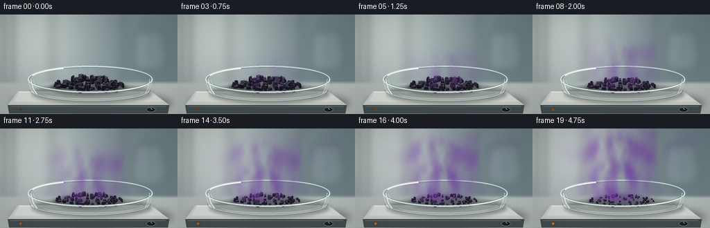
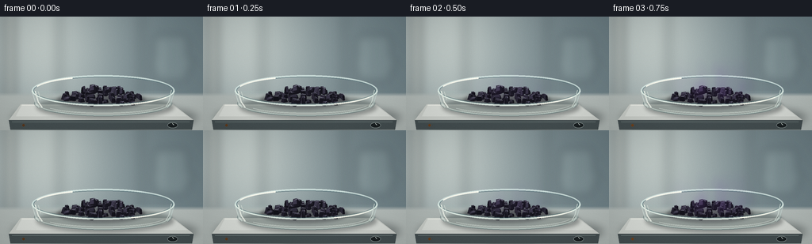

CODING AGENTS AS PIXEL WORLD MODELS
traex/GPT-6.1-Sol · phygen_118
点击播放 · 原生 RGB 像素
逐轮保存的候选
回放视频、检查图与代码变化。
每份候选均可单独播放。实际图片检查记录在下方工具轨迹中。
候选 01播放与检查图
点击播放 · 原生 RGB 像素


展开代码变化
--- 上一保存版本
+++ 本次保存版本
@@ -0,0 +1,208 @@
+from pathlib import Path
+import math
+import numpy as np
+from PIL import Image, ImageDraw, ImageFilter
+import artifact_io
+
+ROOT = Path(__file__).resolve().parent
+W,H,S=256,144,3
+WW,HH=W*S,H*S
+rng=np.random.default_rng(118)
+Y,X=np.mgrid[0:HH,0:WW].astype(float)/S
+
+def overlay(base, layer):
+ return Image.alpha_composite(base.convert('RGBA'),layer)
+
+def ellipse(draw,box,fill=None,outline=None,width=1):
+ draw.ellipse(tuple(int(v*S) for v in box),fill=fill,outline=outline,width=max(1,round(width*S)))
+def line(draw,points,fill,width=1):
+ draw.line([(round(x*S),round(y*S)) for x,y in points],fill=fill,width=max(1,round(width*S)))
+def poly(draw,points,fill):
+ draw.polygon([(round(x*S),round(y*S)) for x,y in points],fill=fill)
+
+# A fixed, softly defocused laboratory backdrop with cool daylight.
+base=np.zeros((HH,WW,3),float)
+light=np.exp(-((X-49)/102)**2-((Y-30)/119)**2)
+for c,(a,b) in enumerate([(105,83),(123,75),(129,66)]):
+ base[:,:,c]=a+b*light+8*(Y/H)
+background=Image.fromarray(np.uint8(np.clip(base,0,255))).convert('RGBA')
+furniture=Image.new('RGBA',(WW,HH));d=ImageDraw.Draw(furniture)
+d.rectangle((8*S,0,17*S,105*S),fill=(235,240,232,115))
+d.rectangle((72*S,0,78*S,107*S),fill=(82,110,119,65))
+d.rectangle((176*S,0,180*S,100*S),fill=(74,100,107,60))
+ellipse(d,(190,51,243,68),fill=(210,228,225,54))
+d.rounded_rectangle((194*S,24*S,236*S,81*S),radius=6*S,fill=(218,238,231,25),outline=(210,234,230,70),width=2*S)
+line(d,[(202,30),(202,74)],(232,244,241,115),2)
+background=overlay(background,furniture.filter(ImageFilter.GaussianBlur(6*S)))
+# Table with a horizon outside the plane of focus.
+table=np.zeros((HH,WW,4),np.uint8)
+a=np.clip((Y-96)/5,0,1)
+for c,col in enumerate((176,184,181)):
+ table[:,:,c]=np.clip(col-0.12*(Y-105)+4*np.sin(X/160),0,255)
+table[:,:,3]=(a*255).astype(np.uint8)
+background=overlay(background,Image.fromarray(table))
+
+# Constant shadows, ceramic surface, and the base of the glass evaporating dish.
+static=Image.new('RGBA',(WW,HH));d=ImageDraw.Draw(static)
+ellipse(d,(15,112,249,144),fill=(19,27,29,95))
+background=overlay(background,static.filter(ImageFilter.GaussianBlur(5*S)))
+static=Image.new('RGBA',(WW,HH));d=ImageDraw.Draw(static)
+poly(d,[(26,111),(218,111),(244,131),(11,131)],(200,204,199,255))
+poly(d,[(11,131),(244,131),(242,143),(13,143)],(67,77,79,255))
+line(d,[(15,133),(239,133)],(112,125,124,255),.7)
+poly(d,[(28,111),(216,111),(236,126),(20,126)],(214,218,213,255))
+line(d,[(27,112),(214,112)],(241,242,233,255),.65)
+# Small temperature knob and pilot light on the near face of the warming stage.
+ellipse(d,(211,134,224,141),fill=(26,32,34,255),outline=(128,140,139,255),width=.65)
+line(d,[(217,135),(219,137)],(213,223,217,255),.65)
+ellipse(d,(28,136,31,139),fill=(57,35,23,255))
+background=overlay(background,static)
+sh=Image.new('RGBA',(WW,HH));d=ImageDraw.Draw(sh)
+ellipse(d,(46,100,219,129),fill=(33,39,40,100))
+background=overlay(background,sh.filter(ImageFilter.GaussianBlur(2.4*S)))
+
+# Transparent glass base and back wall. The near wall is added after the iodine.
+glassback=Image.new('RGBA',(WW,HH));d=ImageDraw.Draw(glassback)
+ellipse(d,(43,94,217,126),fill=(148,171,170,32),outline=(85,114,115,115),width=1.1)
+ellipse(d,(47,95,213,123),outline=(231,241,233,126),width=.75)
+poly(d,[(40,94),(46,111),(50,118),(209,118),(216,111),(219,94)],(176,207,203,17))
+# Back half of the dish rim.
+d.arc((40*S,74*S,220*S,113*S),180,360,fill=(219,237,232,200),width=2*S)
+d.arc((42*S,76*S,218*S,111*S),180,360,fill=(91,118,124,155),width=1*S)
+line(d,[(40,94),(45,110),(49,115)],(220,236,229,142),1)
+line(d,[(220,94),(215,110),(211,115)],(202,224,218,138),1)
+background=overlay(background,glassback)
+
+# Irregular iodine platelets and chunky orthorhombic shards. All geometry is
+# mathematical and rendered as hand-lit planar facets (no rendering engine).
+crystals=[]
+for i in range(68):
+ theta=rng.uniform(0,2*math.pi)
+ r=math.sqrt(rng.uniform())
+ x=math.cos(theta)*r*51
+ dep=math.sin(theta)*r*24
+ central=math.exp(-((x/34)**2+(dep/19)**2))
+ z=central*rng.uniform(3,15)
+ length=rng.uniform(5,14)*(1.05 if i<25 else .78)
+ width=rng.uniform(3,7)
+ height=rng.uniform(3.5,8.5)
+ angle=rng.uniform(0,math.pi)
+ # Bottom six-sided outline and a smaller broken top with beveled facets.
+ outline=np.array([[-.5,-.28],[-.27,-.5],[.39,-.5],[.5,-.15],[.34,.5],[-.4,.45]])
+ outline+=rng.normal(0,.045,outline.shape)
+ rot=np.array([[math.cos(angle),-math.sin(angle)],[math.sin(angle),math.cos(angle)]])
+ xy=(outline*np.array([length,width]))@rot.T
+ top=xy*rng.uniform(.66,.82)+rng.normal(0,.24,(6,2))
+ shade=rng.uniform(.78,1.15)
+ crystals.append((x,dep,z,xy,top,height,shade,rng.uniform(0,1)))
+crystals.sort(key=lambda c:c[1])
+
+# Smooth fixed spatial noise fields; upward motion is continuous in time.
+noise_fields=[]
+for size in (7,15,30,59):
+ a=rng.uniform(0,1,(size,size+12))
+ im=Image.fromarray((a*255).astype(np.uint8)).resize((WW,HH*3),Image.Resampling.BICUBIC)
+ noise_fields.append(np.asarray(im,dtype=float)/255)
+
+def make_vapor(t):
+ strength=np.clip((t-.08)/.92,0,1)**.75
+ if strength<=0:return np.zeros((HH,WW,4),np.uint8)
+ # Thermal advection, broadening, and fine diffusional mixing of iodine gas.
+ rise=107-Y
+ spread=21+0.23*np.maximum(rise,0)
+ center=129+9*np.sin(rise*.041-t*2.3)+4*np.sin(rise*.12-t*3.6)
+ envelope=np.exp(-.5*((X-center)/spread)**2)
+ top=97-(17+72*strength)
+ env_vertical=(1/(1+np.exp(np.clip((top-Y)/7,-50,50))))*(1/(1+np.exp(np.clip((Y-103)/2.4,-50,50))))
+ noise=np.zeros_like(X)
+ for k,n in enumerate(noise_fields):
+ shift=int((t*(37+18*k)+HH*.6))
+ # As time advances a texture parcel moves up through the camera view.
+ ix=(np.arange(HH)+shift)%(n.shape[0]-HH)
+ field=n[ix,:]
+ noise+=field*[.49,.29,.15,.07][k]
+ ribbon=.75+.25*np.sin(rise*.15+np.sin(X*.055-t*1.7)*2-t*4)
+ dens=envelope*env_vertical*np.maximum(.06,(noise-.22))*ribbon
+ # A denser purple layer stays inside the dish, close to its sublimating source.
+ local=np.exp(-((X-129)/45)**2-((Y-91)/13)**2)*(.4+.6*noise)
+ dens=strength*(dens*1.72+local*.19)
+ alpha=1-np.exp(-dens*1.65)
+ out=np.zeros((HH,WW,4),np.uint8)
+ # Violet absorption, with faint scattered light at the plume's sunlit edge.
+ rim=np.clip((126-X)/90,0,1)
+ out[:,:,0]=(97+30*rim+12*noise).astype(np.uint8)
+ out[:,:,1]=(44+18*rim+8*noise).astype(np.uint8)
+ out[:,:,2]=(146+28*rim+15*noise).astype(np.uint8)
+ out[:,:,3]=np.uint8(np.clip(alpha*255,0,205))
+ return out
+
+def render(t):
+ im=background.copy()
+ # Change in the tiny amber heater indicator, not an unrealistic red-hot dish.
+ light=Image.new('RGBA',(WW,HH));d=ImageDraw.Draw(light)
+ ellipse(d,(27,135,32,140),fill=(255,144,49,int(12+70*t)))
+ im=overlay(im,light.filter(ImageFilter.GaussianBlur(1.3*S)))
+ d=ImageDraw.Draw(im)
+ ellipse(d,(28,136,31,139),fill=(int(88+141*t),int(54+64*t),28,255))
+ # Soft contact shadows under the shrinking pile.
+ shadow=Image.new('RGBA',(WW,HH));d=ImageDraw.Draw(shadow)
+ ellipse(d,(72+8*t,95,183-8*t,117),fill=(31,26,36,int(105-32*t)))
+ im=overlay(im,shadow.filter(ImageFilter.GaussianBlur(2*S)))
+ solids=Image.new('RGBA',(WW,HH));d=ImageDraw.Draw(solids)
+ for x,dep,z,xy,top,height,shade,variation in crystals:
+ loss=np.clip(t**1.26*(.48+.15*variation),0,.8)
+ scale=1-loss
+ # The mound collapses gently as material sublimes; every shard stays supported.
+ z=z*(1-t*.80)
+ dep2=dep*(1-t*.07)
+ x2=x*(1-t*.04)
+ def project(pt,zz):return (129+x2+pt[0]*scale,106+dep2*.37+pt[1]*scale*.37-(z+zz*scale)*.94)
+ lower=[project(p,0) for p in xy]
+ upper=[project(p,height) for p in top]
+ # Back, then foreground facets; metallic charcoal-purple, never bright gems.
+ for j in (0,1,2,5,4,3):
+ k=(j+1)%6
+ v=xy[k]-xy[j]
+ normal=np.array([v[1],-v[0]])
+ normal=normal/(np.linalg.norm(normal)+1e-6)
+ illumination=.24+.65*max(0,float(normal@np.array([-.82,-.56])))
+ c=np.array([58,54,68])*shade*illumination+np.array([8,8,13])
+ poly(d,[lower[j],lower[k],upper[k],upper[j]],tuple(np.uint8(np.clip(c,0,255)))+(255,))
+ # The top is split along cleavage planes into unequal reflective surfaces.
+ center=np.mean(np.array(upper),axis=0)
+ for j in range(6):
+ k=(j+1)%6
+ lum=[.79,.92,.56,.40,.52,.68][j]*shade
+ col=np.array([69,66,83])*lum+np.array([10,10,13])
+ poly(d,[upper[j],upper[k],tuple(center)],tuple(np.uint8(col))+(255,))
+ # Narrow silvery cleavage highlights persist on selected solid edges.
+ if variation>.33:
+ line(d,[upper[0],upper[1],upper[2]],(int(111*shade),int(110*shade),int(129*shade),215),.37)
+ if variation>.78:
+ line(d,[upper[1],upper[2]],(180,182,198,222),.43)
+ im=overlay(im,solids)
+ im=overlay(im,Image.fromarray(make_vapor(t)))
+ # Near wall: double curved edge, faint tint, strong grazing speculars.
+ fg=Image.new('RGBA',(WW,HH));d=ImageDraw.Draw(fg)
+ poly(d,[(41,94),(46,110),(52,118),(72,122),(186,122),(208,118),(215,110),(219,94),(213,100),(200,106),(178,111),(83,111),(60,106),(47,100)],(183,218,210,18))
+ d.arc((40*S,74*S,220*S,113*S),0,180,fill=(233,247,238,215),width=2*S)
+ d.arc((42*S,76*S,218*S,111*S),0,180,fill=(85,117,121,146),width=1*S)
+ d.arc((46*S,94*S,214*S,125*S),0,180,fill=(216,235,226,168),width=1*S)
+ d.arc((50*S,96*S,210*S,122*S),18,147,fill=(237,247,237,135),width=.7*S if False else 2)
+ line(d,[(44,94),(48,108),(53,115)],(245,250,240,215),1.4)
+ line(d,[(48,95),(51,105)],(242,248,237,157),.7)
+ line(d,[(216,93),(213,107),(209,114)],(231,245,235,166),1.05)
+ d.arc((42*S,75*S,218*S,112*S),198,244,fill=(253,253,242,245),width=2*S)
+ d.arc((40*S,74*S,220*S,113*S),28,67,fill=(250,252,240,235),width=2*S)
+ im=overlay(im,fg).convert('RGB')
+ # Downsampling supplies optical antialiasing; an extremely fine fixed sensor grain.
+ im=im.resize((W,H),Image.Resampling.LANCZOS)
+ a=np.array(im,dtype=float)
+ vignette=1-.10*((np.arange(W)[None,:]-128)/150)**2-.06*((np.arange(H)[:,None]-72)/94)**2
+ grain=np.random.default_rng(820).normal(0,.48,(H,W,1))
+ return np.uint8(np.clip(a*vignette[:,:,None]+grain,0,255))
+
+if __name__=='__main__':
+ frames=np.stack([render(i/19) for i in range(20)])
+ artifact_io.save(frames,ROOT)
+ print('Saved',frames.shape,frames.dtype)
可观测工具轨迹
实际执行的命令与返回图片。
命令 1exit 0
/bin/bash -lc 'ls -la && cat prompt.txt && cat GENERATION_RULES.md && cat task_spec.json'
命令 2exit 0
/bin/bash -lc "cat artifact_io.py && python - <<'PY'
import PIL,numpy
print('PIL',PIL.__version__)
PY"命令 3exit 0
/bin/bash -lc "cat > generate.py <<'PY'
from pathlib import Path
import math
import numpy as np
from PIL import Image, ImageDraw, ImageFilter
import artifact_io
ROOT = Path(__file__).resolve().parent
W,H,S=256,144,3
WW,HH=W*S,H*S
rng=np.random.default_rng(118)
Y,X=np.mgrid[0:HH,0:WW].astype(float)/S
def overlay(base, layer):
return Image.alpha_composite(base.convert('RGBA'),layer)
def ellipse(draw,box,fill=None,outline=None,width=1):
draw.ellipse(tuple(int(v*S) for v in box),fill=fill,outline=outline,width=max(1,round(width*S)))
def line(draw,points,fill,width=1):
draw.line([(round(x*S),round(y*S)) for x,y in points],fill=fill,width=max(1,round(width*S)))
def poly(draw,points,fill):
draw.polygon([(round(x*S),round(y*S)) for x,y in points],fill=fill)
# A fixed, softly defocused laboratory backdrop with cool daylight.
base=np.zeros((HH,WW,3),float)
light=np.exp(-((X-49)/102)**2-((Y-30)/119)**2)
for c,(a,b) in enumerate([(105,83),(123,75),(129,66)]):
base[:,:,c]=a+b*light+8*(Y/H)
background=Image.fromarray(np.uint8(np.clip(base,0,255))).convert('RGBA')
furniture=Image.new('RGBA',(WW,HH));d=ImageDraw.Draw(furniture)
d.rectangle((8*S,0,17*S,105*S),fill=(235,240,232,115))
d.rectangle((72*S,0,78*S,107*S),fill=(82,110,119,65))
d.rectangle((176*S,0,180*S,100*S),fill=(74,100,107,60))
ellipse(d,(190,51,243,68),fill=(210,228,225,54))
d.rounded_rectangle((194*S,24*S,236*S,81*S),radius=6*S,fill=(218,238,231,25),outline=(210,234,230,70),width=2*S)
line(d,[(202,30),(202,74)],(232,244,241,115),2)
background=overlay(background,furniture.filter(ImageFilter.GaussianBlur(6*S)))
# Table with a horizon outside the plane of focus.
table=np.zeros((HH,WW,4),np.uint8)
a=np.clip((Y-96)/5,0,1)
for c,col in enumerate((176,184,181)):
table[:,:,c]=np.clip(col-0.12*(Y-105)+4*np.sin(X/160),0,255)
table[:,:,3]=(a*255).astype(np.uint8)
background=overlay(background,Image.fromarray(table))
# Constant shadows, ceramic surface, and the base of the glass evaporating dish.
static=Image.new('RGBA',(WW,HH));d=ImageDraw.Draw(static)
ellipse(d,(15,112,249,144),fill=(19,27,29,95))
background=overlay(background,static.filter(ImageFilter.GaussianBlur(5*S)))
static=Image.new('RGBA',(WW,HH));d=ImageDraw.Draw(static)
poly(d,[(26,111),(218,111),(244,131),(11,131)],(200,204,199,255))
poly(d,[(11,131),(244,131),(242,143),(13,143)],(67,77,79,255))
line(d,[(15,133),(239,133)],(112,125,124,255),.7)
poly(d,[(28,111),(216,111),(236,126),(20,126)],(214,218,213,255))
line(d,[(27,112),(214,112)],(241,242,233,255),.65)
# Small temperature knob and pilot light on the near face of the warming stage.
ellipse(d,(211,134,224,141),fill=(26,32,34,255),outline=(128,140,139,255),width=.65)
line(d,[(217,135),(219,137)],(213,223,217,255),.65)
ellipse(d,(28,136,31,139),fill=(57,35,23,255))
background=overlay(background,static)
sh=Image.new('RGBA',(WW,HH));d=ImageDraw.Draw(sh)
ellipse(d,(46,100,219,129),fill=(33,39,40,100))
background=overlay(background,sh.filter(ImageFilter.GaussianBlur(2.4*S)))
# Transparent glass base and back wall. The near wall is added after the iodine.
glassback=Image.new('RGBA',(WW,HH));d=ImageDraw.Draw(glassback)
ellipse(d,(43,94,217,126),fill=(148,171,170,32),outline=(85,114,115,115),width=1.1)
ellipse(d,(47,95,213,123),outline=(231,241,233,126),width=.75)
poly(d,[(40,94),(46,111),(50,118),(209,118),(216,111),(219,94)],(176,207,203,17))
# Back half of the dish rim.
d.arc((40*S,74*S,220*S,113*S),180,360,fill=(219,237,232,200),width=2*S)
d.arc((42*S,76*S,218*S,111*S),180,360,fill=(91,118,124,155),width=1*S)
line(d,[(40,94),(45,110),(49,115)],(220,236,229,142),1)
line(d,[(220,94),(215,110),(211,115)],(202,224,218,138),1)
background=overlay(background,glassback)
# Irregular iodine platelets and chunky orthorhombic shards. All geometry is
# mathematical and rendered as hand-lit planar facets (no rendering engine).
crystals=[]
for i in range(68):
theta=rng.uniform(0,2*math.pi)
r=math.sqrt(rng.uniform())
x=math.cos(theta)*r*51
dep=math.sin(theta)*r*24
central=math.exp(-((x/34)**2+(dep/19)**2))
z=central*rng.uniform(3,15)
length=rng.uniform(5,14)*(1.05 if i<25 else .78)
width=rng.uniform(3,7)
height=rng.uniform(3.5,8.5)
angle=rng.uniform(0,math.pi)
# Bottom six-sided outline and a smaller broken top with beveled facets.
outline=np.array([[-.5,-.28],[-.27,-.5],[.39,-.5],[.5,-.15],[.34,.5],[-.4,.45]])
outline+=rng.normal(0,.045,outline.shape)
rot=np.array([[math.cos(angle),-math.sin(angle)],[math.sin(angle),math.cos(angle)]])
xy=(outline*np.array([length,width]))@rot.T
top=xy*rng.uniform(.66,.82)+rng.normal(0,.24,(6,2))
shade=rng.uniform(.78,1.15)
crystals.append((x,dep,z,xy,top,height,shade,rng.uniform(0,1)))
crystals.sort(key=lambda c:c[1])
# Smooth fixed spatial noise fields; upward motion is continuous in time.
noise_fields=[]
for size in (7,15,30,59):
a=rng.uniform(0,1,(size,size+12))
im=Image.fromarray((a*255).astype(np.uint8)).resize((WW,HH*3),Image.Resampling.BICUBIC)
noise_fields.append(np.asarray(im,dtype=float)/255)
def make_vapor(t):
strength=np.clip((t-.08)/.92,0,1)**.75
if strength<=0:return np.zeros((HH,WW,4),np.uint8)
# Thermal advection, broadening, and fine diffusional mixing of iodine gas.
rise=107-Y
spread=21+0.23*np.maximum(rise,0)
center=129+9*np.sin(rise*.041-t*2.3)+4*np.sin(rise*.12-t*3.6)
envelope=np.exp(-.5*((X-center)/spread)**2)
top=97-(17+72*strength)
env_vertical=(1/(1+np.exp(np.clip((top-Y)/7,-50,50))))*(1/(1+np.exp(np.clip((Y-103)/2.4,-50,50))))
noise=np.zeros_like(X)
for k,n in enumerate(noise_fields):
shift=int((t*(37+18*k)+HH*.6))
# As time advances a texture parcel moves up through the camera view.
ix=(np.arange(HH)+shift)%(n.shape[0]-HH)
field=n[ix,:]
noise+=field*[.49,.29,.15,.07][k]
ribbon=.75+.25*np.sin(rise*.15+np.sin(X*.055-t*1.7)*2-t*4)
dens=envelope*env_vertical*np.maximum(.06,(noise-.22))*ribbon
# A denser purple layer stays inside the dish, close to its sublimating source.
local=np.exp(-((X-129)/45)**2-((Y-91)/13)**2)*(.4+.6*noise)
dens=strength*(dens*1.72+local*.19)
alpha=1-np.exp(-dens*1.65)
out=np.zeros((HH,WW,4),np.uint8)
# Violet absorption, with faint scattered light at the plume's sunlit edge.
rim=np.clip((126-X)/90,0,1)
out[:,:,0]=(97+30*rim+12*noise).astype(np.uint8)
out[:,:,1]=(44+18*rim+8*noise).astype(np.uint8)
out[:,:,2]=(146+28*rim+15*noise).astype(np.uint8)
out[:,:,3]=np.uint8(np.clip(alpha*255,0,205))
return out
def render(t):
im=background.copy()
# Change in the tiny amber heater indicator, not an unrealistic red-hot dish.
light=Image.new('RGBA',(WW,HH));d=ImageDraw.Draw(light)
ellipse(d,(27,135,32,140),fill=(255,144,49,int(12+70*t)))
im=overlay(im,light.filter(ImageFilter.GaussianBlur(1.3*S)))
d=ImageDraw.Draw(im)
ellipse(d,(28,136,31,139),fill=(int(88+141*t),int(54+64*t),28,255))
# Soft contact shadows under the shrinking pile.
shadow=Image.new('RGBA',(WW,HH));d=ImageDraw.Draw(shadow)
ellipse(d,(72+8*t,95,183-8*t,117),fill=(31,26,36,int(105-32*t)))
im=overlay(im,shadow.filter(ImageFilter.GaussianBlur(2*S)))
solids=Image.new('RGBA',(WW,HH));d=ImageDraw.Draw(solids)
for x,dep,z,xy,top,height,shade,variation in crystals:
loss=np.clip(t**1.26*(.48+.15*variation),0,.8)
scale=1-loss
# The mound collapses gently as material sublimes; every shard stays supported.
z=z*(1-t*.80)
dep2=dep*(1-t*.07)
x2=x*(1-t*.04)
def project(pt,zz):return (129+x2+pt[0]*scale,106+dep2*.37+pt[1]*scale*.37-(z+zz*scale)*.94)
lower=[project(p,0) for p in xy]
upper=[project(p,height) for p in top]
# Back, then foreground facets; metallic charcoal-purple, never bright gems.
for j in (0,1,2,5,4,3):
k=(j+1)%6
v=xy[k]-xy[j]
normal=np.array([v[1],-v[0]])
normal=normal/(np.linalg.norm(normal)+1e-6)
illumination=.24+.65*max(0,float(normal@np.array([-.82,-.56])))
c=np.array([58,54,68])*shade*illumination+np.array([8,8,13])
poly(d,[lower[j],lower[k],upper[k],upper[j]],tuple(np.uint8(np.clip(c,0,255)))+(255,))
# The top is split along cleavage planes into unequal reflective surfaces.
center=np.mean(np.array(upper),axis=0)
for j in range(6):
k=(j+1)%6
lum=[.79,.92,.56,.40,.52,.68][j]*shade
col=np.array([69,66,83])*lum+np.array([10,10,13])
poly(d,[upper[j],upper[k],tuple(center)],tuple(np.uint8(col))+(255,))
# Narrow silvery cleavage highlights persist on selected solid edges.
if variation>.33:
line(d,[upper[0],upper[1],upper[2]],(int(111*shade),int(110*shade),int(129*shade),215),.37)
if variation>.78:
line(d,[upper[1],upper[2]],(180,182,198,222),.43)
im=overlay(im,solids)
im=overlay(im,Image.fromarray(make_vapor(t)))
# Near wall: double curved edge, faint tint, strong grazing speculars.
fg=Image.new('RGBA',(WW,HH));d=ImageDraw.Draw(fg)
poly(d,[(41,94),(46,110),(52,118),(72,122),(186,122),(208,118),(215,110),(219,94),(213,100),(200,106),(178,111),(83,111),(60,106),(47,100)],(183,218,210,18))
d.arc((40*S,74*S,220*S,113*S),0,180,fill=(233,247,238,215),width=2*S)
d.arc((42*S,76*S,218*S,111*S),0,180,fill=(85,117,121,146),width=1*S)
d.arc((46*S,94*S,214*S,125*S),0,180,fill=(216,235,226,168),width=1*S)
d.arc((50*S,96*S,210*S,122*S),18,147,fill=(237,247,237,135),width=.7*S if False else 2)
line(d,[(44,94),(48,108),(53,115)],(245,250,240,215),1.4)
line(d,[(48,95),(51,105)],(242,248,237,157),.7)
line(d,[(216,93),(213,107),(209,114)],(231,245,235,166),1.05)
d.arc((42*S,75*S,218*S,112*S),198,244,fill=(253,253,242,245),width=2*S)
d.arc((40*S,74*S,220*S,113*S),28,67,fill=(250,252,240,235),width=2*S)
im=overlay(im,fg).convert('RGB')
# Downsampling supplies optical antialiasing; an extremely fine fixed sensor grain.
im=im.resize((W,H),Image.Resampling.LANCZOS)
a=np.array(im,dtype=float)
vignette=1-.10*((np.arange(W)[None,:]-128)/150)**2-.06*((np.arange(H)[:,None]-72)/94)**2
grain=np.random.default_rng(820).normal(0,.48,(H,W,1))
return np.uint8(np.clip(a*vignette[:,:,None]+grain,0,255))
if __name__=='__main__':
frames=np.stack([render(i/19) for i in range(20)])
artifact_io.save(frames,ROOT)
print('Saved',frames.shape,frames.dtype)
PY
python generate.py"命令 4exit 2
/bin/bash -lc 'if command -v ffmpeg >/dev/null 2>&1; then ffmpeg -loglevel error -y -framerate 4 -i frames/%02d.png -c:v libx264 -crf 16 -pix_fmt yuv420p -movflags +faststart video.mp4; fi ls -lh pixels.npz index.html inspection.png video.mp4 2>/dev/null'
视觉工具实际返回图片 1

保存候选 1 份；完成命令 4 次；可验证图片返回 1 张。原始 API 响应与完整日志保留在本地。